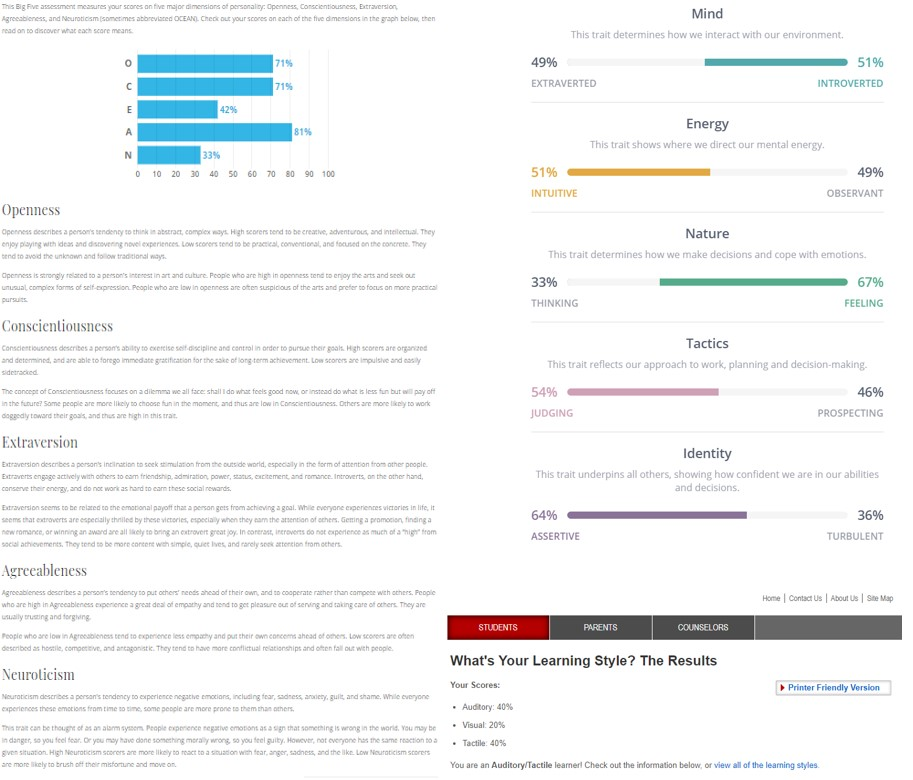

I think that the results of these tests mean that I know exactly who I am and what I want. These results lead me to believe that I would be an extremely easy going yet effective member of a team that overall cares about the work being done just as much as the team getting along and sharing all ideas. I should take this into account by having an open mind when forming a team and understanding that whoever I am in a team with I will be able to get along with or try to get along with to achieve a common goal.
